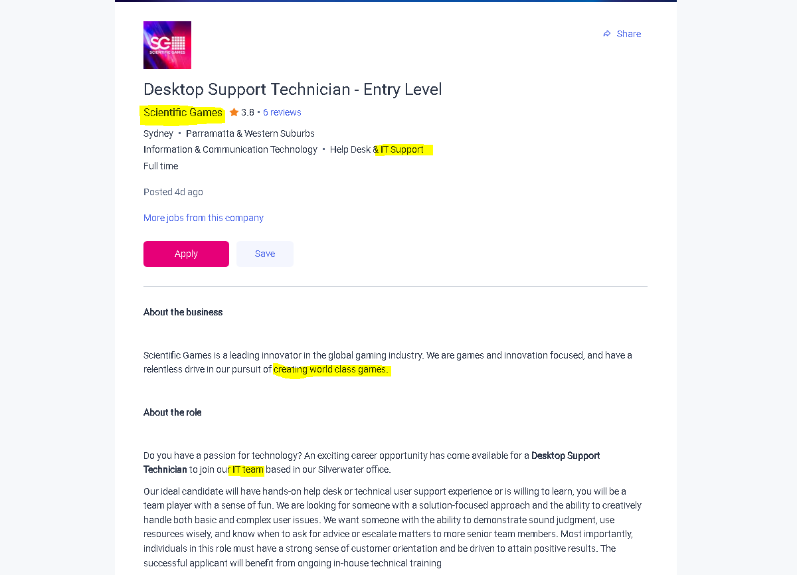

https://www.seek.com.au/job/56254770?

This position drew great appeal out of me because since an early age I have always dreamed of working for a game company and its tech support, so it utilises my existing but not yet professional skillset. The position is entry level but that is fine because my current understanding of IT positions is extremely limited so it would allow me to re-assess my chosen career path from a flexible position.
The position appears to mix hardware and software problem solving with project-based resource management, to do this in a professional setting I would need to better understand the systems that companies like this one is immersed in, as I have no familiarity with professional IT environments other than attempting to solve issues my supervisors have had with their devices at work.
The skills I need are not too far out of reach as familiarity with enterprise systems can come from studying at university and gaining experience with similar systems, especially if the university has industry contacts. I am sure that the scope of what is needed will expand over time but getting experience with industry standards has repeatedly been the most significant roadblock.